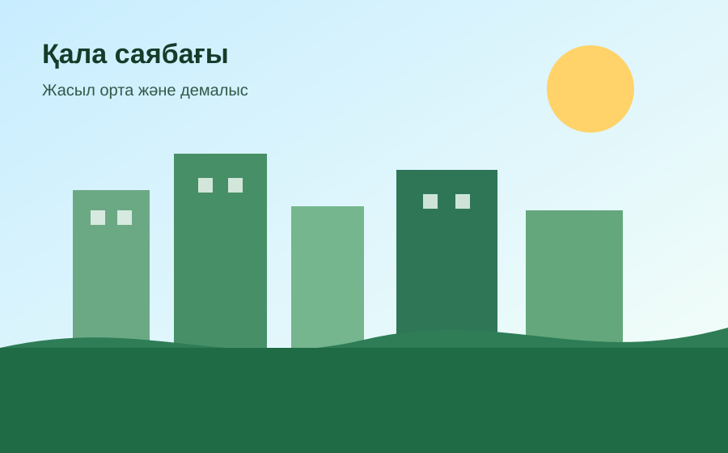

Галерея
Табиғат көріністері
Бұл бетте кемінде үш сурет және бір бейнефайл орналасқан.
Суреттер



Бейнефайл
Бұл қысқа бейнеролик сайттың бейнефайл талабын орындау үшін жасалды.
Экотуризм кеңестері
- Қоқысты табиғатта қалдырмаңыз.
- Өсімдіктерге және жануарларға зиян келтірмеңіз.
- Белгіленген жолдармен ғана жүріңіз.
- Саяхат кезінде қауіпсіздік ережелерін сақтаңыз.